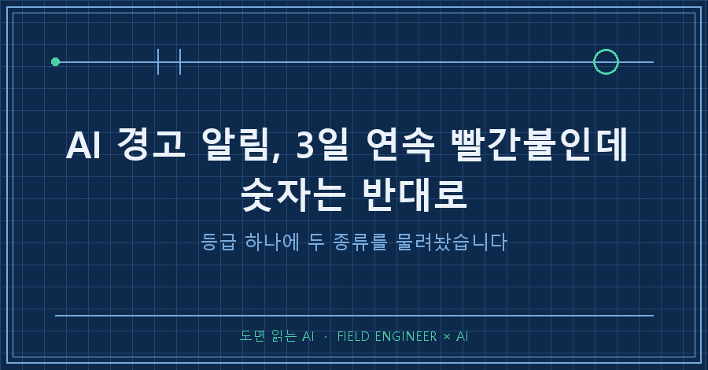
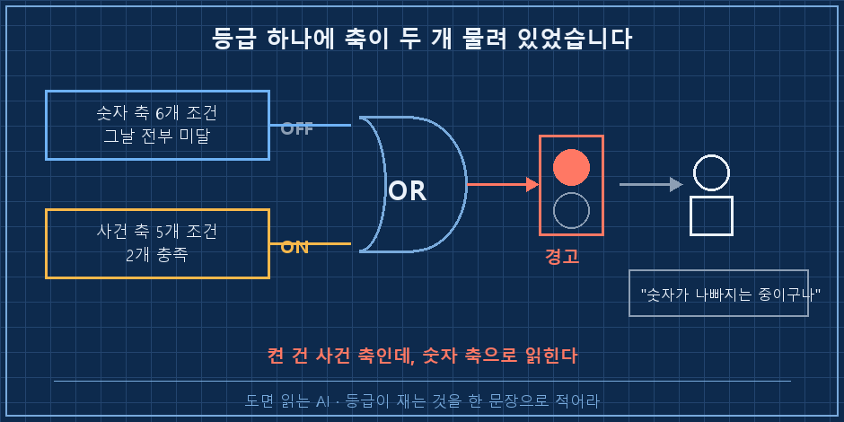
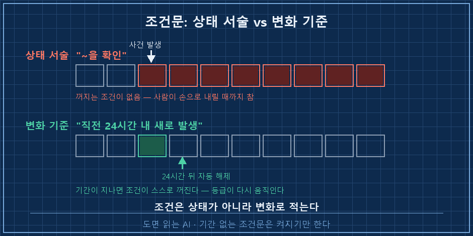
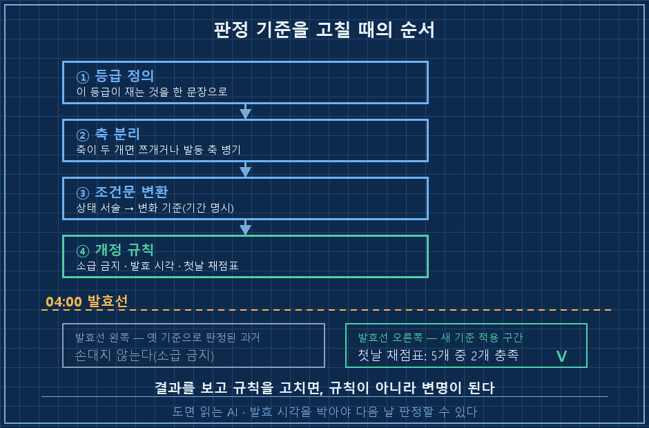

AI 경고 알림을 하나 굴리고 있는데, 새벽에 만들어 둔 리포트 맨 위에 서로 반대되는 두 줄이 나란히 붙어 있었습니다.
🔴 경고 3일 연속
■ 경고 3일째입니다. 그런데 그 3일 동안 숫자는 올랐습니다.한 화면에서 등급은 나빠졌다고 하고, 바로 아랫줄은 좋아졌다고 하는 거죠..
AI 경고 알림이 이렇게 뒤집혀 읽히는 건 등급 하나에 성질이 다른 두 가지를 같이 물려놨기 때문입니다. 하나는 "내가 알아야 할 사건이 진행 중인가", 다른 하나는 "숫자가 실제로 위험 구간인가". 이 둘을 OR로 묶어 색 하나로 내보내면 받는 쪽은 언제나 뒤쪽 뜻으로 읽습니다.
2026년 9월 기준 기록이고요. 개인용 자동 리포트를 굴리면서 겪은 얘기지 무슨 판단을 권하는 글은 아닙니다. 다만 매일 도는 자동화에 경고 등급을 달아두셨다면 대상이 뭐든 똑같이 걸리는 함정이에요.
저는 설비 쪽 일을 열다섯 해쯤 했습니다. 경보반에 램프가 켜지면 왜 켜졌는지 찾으러 뛰어가는 게 일과였고요. 현장에선 빨간불을 보면 "무슨 조건으로 켜졌냐"부터 묻는데, 정작 제가 만든 자동화한테는 그걸 한 번도 안 물어봤어요..
빨간불 사흘 동안 숫자는 어디로 갔을까요
경고를 켠 날부터 사흘치를 나란히 놓고 봤습니다. 등급은 사흘 내내 빨강 그대로였고요.
| 경과 | 대표 지표 등락 | 변동성 지표 |
|---|---|---|
| 1일차 | -0.71% | 16.34 |
| 2일차 | +0.46% | 15.20 |
| 3일차 | +1.11% | 14.46 |
대표 지표는 사흘 중 이틀이 플러스였고, 변동성 지표는 사흘 연속 내려갔습니다. 안 움직인 건 등급 하나뿐이었어요.
여기서 제가 뭘 잘못 읽고 있었는지 알았습니다. "경고 3일 연속"이라고 적히면 사람은 자동으로 "점점 나빠지는 중"으로 읽거든요. 그런데 그 등급이 실제로 재던 건 그게 아니었습니다. 리포트 본문에 이렇게 적혀 있더라고요.
제 경고등은 '숫자가 나빠지고 있다'는 뜻이 아니라
'알아야 할 사건이 진행 중이다'라는 뜻입니다.
둘은 다른 말이고, 이 차이를 숨기면 경고등이 늑대소년이 됩니다.조건표를 열어봤더니 축이 두 개였어요
그날 등급을 켠 조건이 정확히 뭐였는지 세어봤습니다. 경고 조건은 두 묶음으로 나뉘어 있었어요.
| 축 | 조건 수 | 재는 것 | 그날 결과 |
|---|---|---|---|
| 숫자 축 | 6개 | 값이 위험 구간에 들어왔나 | 전부 미달 |
| 사건 축 | 5개 | 알아야 할 일이 새로 벌어졌나 | 2개 충족 |
숫자 축은 6개가 전부 미달이었고, 사건 축 5개 중 2개가 걸려서 빨간불이 켜진 겁니다. 두 묶음이 OR로 묶여 있으니 어느 쪽이 켰든 화면에 나오는 색은 똑같아요.
색은 같은데 뜻은 전혀 다르죠. 현장 말로 바꾸면 온도 초과 램프하고 "정비 작업 중" 램프를 같은 빨간 램프 하나에 물려놓은 꼴입니다. 둘 다 빨강인데 하나는 뛰어가야 하고 하나는 알고만 있으면 되잖아요.
그래서 등급을 지우지 않고 어느 축이 켰는지를 등급 옆에 항상 적기로 했습니다. "🔴 경고(사건 축 단독 발동, 숫자 축 6개 전부 미달)" 이런 식으로요. 한 줄 늘어나는 대신 오독이 사라졌어요.

왜 사흘 동안 한 번도 안 꺼졌을까요
사건 축 조건 5개의 문장을 그대로 뜯어봤습니다. 전부 이런 꼴이었어요.
[기존] "~이 진행 중임을 확인" → 한 번 참이면 계속 참
[변경] "직전 24시간 내 새로 발생" → 24시간 지나면 자동 해제상태 서술로 적힌 조건은 스스로 꺼지는 방법이 없습니다. 사람이 손으로 내려주기 전까지는요. 사건이 며칠 전에 이미 지나갔어도 문장은 여전히 참이고, 등급은 그 자리에 붙박이가 됩니다.
예전에 알림 쪽에서 "상태를 보내지 말고 어제와 달라진 것을 보내라"는 얘기를 한 번 적은 적이 있는데, 그땐 보내는 내용만 고쳤어요. 판정 조건문 자체가 상태로 적혀 있으면 보내는 쪽을 아무리 다듬어도 소용없더라고요. 손대야 할 곳이 한 칸 더 안쪽이었던 겁니다.

그래서 조건표를 이 순서로 고쳤습니다
AI 경고 알림을 손볼 땐 이 순서를 지켰습니다. 중간을 건너뛰면 며칠 뒤에 그대로 원위치하더라고요..
1. 등급이 재는 것을 한 문장으로 적는다 — 이 한 문장이 안 써지면 그 등급은 아직 쓸 수 있는 상태가 아니에요
2. 축이 두 개면 등급을 쪼개거나, 발동한 축을 등급 옆에 항상 붙인다 — 저는 후자를 골랐습니다
3. 조건문을 전부 변화 기준으로 바꾼다 — "한 번 참이면 영원히 참"인 문장을 색출해서 기간을 박습니다
4. 개정할 땐 소급 금지 · 발효 시각 명시 · 첫날 채점표 공개
4번이 제일 안 지켜지는 자리예요. 조건을 새로 썼으면 어제 판정도 새 기준으로 다시 매기고 싶어지거든요. 그런데 기록엔 이렇게 적혀 있었습니다.
결과를 보고 나서 규칙을 고치면, 그건 규칙이 아니라 변명이 됩니다.
새 조건은 오늘 04시부터 처음 적용했고, 소급 적용은 하지 않았습니다.확인 방법은 발효 다음 날 한 번만 보면 됩니다. 조건별 충족·미충족 채점표를 그대로 남겨보세요. 제 경우 첫날이 5개 중 2개 충족이었고, 결과는 경고 유지였어요. 이 부분 충족이 찍히면 기준이 실제로 걸러내고 있다는 뜻입니다. 며칠 연속 "전부 충족"이나 "전부 미충족"만 나오면 축이 다시 잠긴 거고요.

이건 저도 한참 헷갈렸어요
Q. 등급 옆에 축을 붙이면 볼 게 늘어나는 거 아닌가요?
글자는 늘어나는데 판단은 줄어듭니다. 색만 보면 "그래서 뭘 해야 하지"를 매번 다시 생각해야 하거든요. 축이 적혀 있으면 사건 축이 켰을 땐 읽고 넘기고, 숫자 축이 켰을 땐 손을 움직이면 됩니다. 저는 이 한 줄 붙이고 나서 리포트를 다시 열어보게 됐어요.
Q. 과거 판정을 새 기준으로 다시 매기면 더 정확해지지 않나요?
정확해 보이는데 검증이 불가능해집니다. 새 기준으로 과거를 다시 칠하면 그 기준이 실제로 뭘 걸러내는지 영영 알 수 없어요. 결과를 이미 아는 상태로 채점하는 거니까요. 발효 시각을 박아두고 그 뒤로만 적용해야, 며칠 뒤에 "이 기준이 일을 했나"를 물어볼 수 있습니다.
Q. "직전 24시간"이 너무 짧지 않나요?
사건 성격에 맞추시면 됩니다. 중요한 건 길이가 아니라 기간이 박혔는가예요. 24시간이든 7일이든 숫자가 붙어 있으면 시간이 지나면서 조건이 스스로 꺼집니다. 기간 없는 문장만 아니면 돼요.
정리
- AI 경고 알림이 실제와 반대로 읽히면, 먼저 그 등급이 몇 종류를 재고 있는지 세어보세요
- 조건문에 기간이 없으면 그 조건은 켜지기만 하고 안 꺼집니다
- 기준을 고칠 땐 소급 적용을 하지 마세요. 대신 첫날 채점표를 남기면 다음 날 바로 판정할 수 있습니다
빨간불이 사흘째 켜져 있는데 숫자가 반대로 가고 있으면, 보통은 시장이 이상한 게 아니라 제 조건문이 이상한 겁니다. 저는 그걸 사흘 만에 알았고, 그나마도 리포트가 두 줄을 나란히 적어놨기 때문에 눈에 띄었어요. 한쪽만 적었으면 그냥 넘어갔을 겁니다!
지금 돌리고 계신 자동화의 경고 조건 중에, 스스로 꺼질 방법이 없는 문장은 몇 개나 되나요?
고쳐놓고 다음 날 다시 확인한 기준들은 makefield.ai에 날짜별로 남겨두고 있습니다.
태그: #AI경고알림 #자동화경고조건 #AI판정기준변경 #알림등급설계 #AI알림자동화 #AI리포트 #자동화오탐 #AI에게일시키기 #AI자동화구축 #AI결과물검수 #AI판단검증 #AI기록관리 #AI비서만들기 #AI활용법 #도면읽는AI